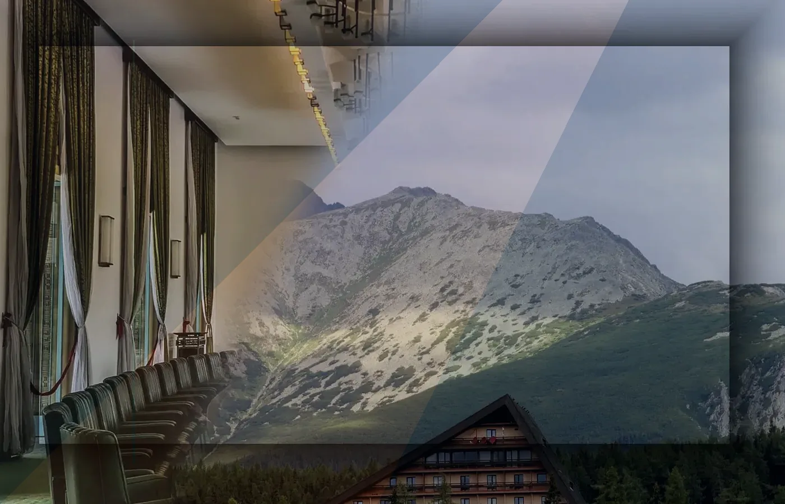

Leeftijdscontrole
Heldere zones voor ontvangst, tafelindeling, pauze en bezoekersservice ondersteunen een overzichtelijke avond op locatie.

Stadse pokerroomgids Nederland
Een heldere bezoekersroute voor fysieke pokeravonden, toernooien aan echte tafels en uitzendingen vanuit een locatie in Nederland.
Onafhankelijke bezoekersgids · niet beheerd door of verbonden aan BetCity of de merkhouder.
Van stadsroute tot tafelmoment

BetCity
BetCity brengt praktische bezoekersinformatie samen in een stedelijke route: van aankomst en registratie tot tafelindeling, pauze en vertrek.
Heldere zones voor ontvangst, tafelindeling, pauze en bezoekersservice ondersteunen een overzichtelijke avond op locatie.
Meer informatiePokerroom
Heldere zones voor ontvangst, tafelindeling, pauze en bezoekersservice ondersteunen een overzichtelijke avond op locatie.
Meer informatie
Speelschema
Gebruik lijst- en kalenderweergave zodra bevestigde evenementen beschikbaar zijn. Filters werken op datum, format en status.
Toernooien
Live
Uitzendingen vormen een venster op een echt evenement in de pokerroom en zijn nooit een digitale speeltafel.
Deze uitzending toont een fysiek pokertoernooi op locatie. De videospeler biedt geen mogelijkheid om online deel te nemen.

Regels
Heldere zones voor ontvangst, tafelindeling, pauze en bezoekersservice ondersteunen een overzichtelijke avond op locatie.
Van stadsroute tot tafelmoment
Van stadsroute tot tafelmoment
Van stadsroute tot tafelmoment

Dining
Een compacte city lounge biedt ruimte voor een drankje, lichte maaltijd en een rustige overgang tussen de rondes.
Meer informatieBezoek
Van trein en fiets tot auto en toegankelijk vervoer: alleen geverifieerde routegegevens worden getoond.

Gallery
FAQ
Nee. Via deze website kan niet online worden gepokerd. Alle spellen en toernooien vinden uitsluitend plaats aan fysieke tafels op locatie.
Gebruik het aanvraagformulier voor een fysiek evenement. Een plaats is pas definitief na bevestiging.
Deze uitzending toont een fysiek pokertoernooi op locatie. De videospeler biedt geen mogelijkheid om online deel te nemen.